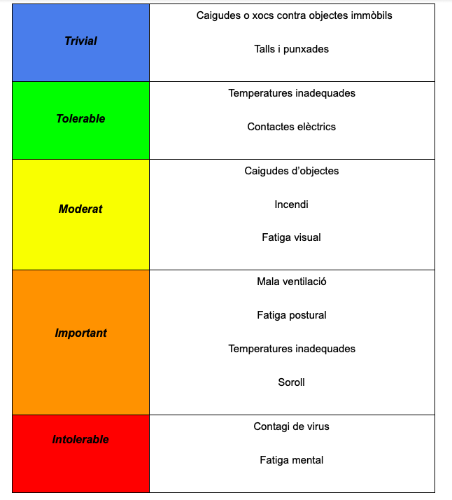
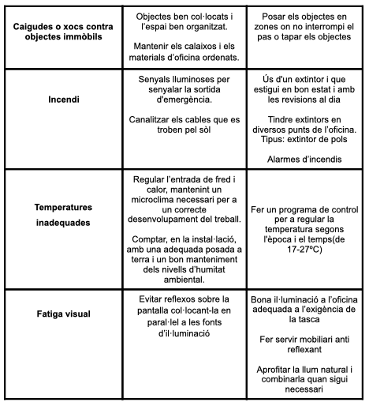
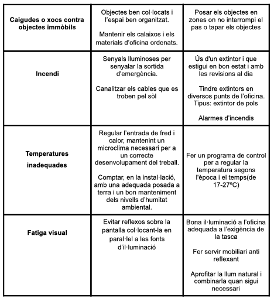

LES MILLORS OFERTES PER VIATJAR A BALI!!

VIU LA NIT MÉS MÀGICA DE LA TEVA VIDA A ISLÀNDIA

NO ET PERDIS LA MÀGIA D'UN DESTÍ COM EL SALVADOR
Avaluació de Riscos
L’avaluació de riscos de l’empresa es pot definir com el procés para identificar els riscos derivats de l’activitat triada i de les tasques de les persones que treballen en l'empresa.
Possibles riscos
Caigudes d’objectes: als despatxos si no es fa un bon manteniment (aires condicionats) o hi ha desordre o prestatges mal fixats a la paret.
Contactes elèctrics:als despatxos amb els ordinadors si estan en mal estat o en el quadre de llums.
Talls i punxades: al despatx si es deixen objectes tallants (tisores) mal guardats o on no toca
Fatiga mental: al despatx per excés de treball, desordre o per falta de tranquil·litat per poder concentrar-se
Fatiga postural: a la cadira adoptant males postures i cadires en mal estat o no ergonòmiques.
Contagi de virus: a tota l’oficina si no es tiren bé els papers d’un sol ús, no es fa servir el gel desinfectant i/o no es proporcionen mascaretes.
Caigudes o xocs contra objectes immòbils:a tota l’oficina per desordre i falta d’espai.
Incendi:a l’oficina a prop dels ordinadors pels cables mal col·locats i en mal estat o immobiliari.
Temperatures inadequades:a l’oficina quan les temperatures estan elevades o inferiors
Fatiga visual:al despatx davant de l’ordinador si la llum no és bona o mala il·luminació.
Soroll: a l’oficina quan hi ha molt xivarri, música alta o sorolls molestos al carrer (d’obres)
Mala ventilació: a l’oficina quan no hi ha bon equip de ventilació ni finestres per poder obrir.
Grau de risc
 

Per evitar tot això l’empresa ha de proporcionar per part de la empresa formació i informació sobre el riscos laborals.
Normativa
Llei 31/1995 de Prevenció de Riscos Laborals
Real Decret 1942/1993 Prevenció d’incendis
RD 1215/1997 Riscos lloc de treball
RD 1215/1997 Riscos equip de treball
RD 614/2001 Riscos elèctrics
RD 286/2006 Soroll
RD 1311/2005 Vibracions
RD 486/1997 Il·luminació i Temperatura
RD 783/2001 Radiacions
No et preocupis pels teus viatges, nosaltres ens encarreguem de tot
Viatges organitzats a:
Costa Rica
Lanzarote
Islàndia
Bali
Països Baixos
Marroc
Uruguay
El Salvador
Veneçuela
Argentina
Bolivia
Brasil
Itàlia
Alemanya
Anglaterra
Japó
Canadá
India
Estats Units